산업보건지도사 (2013-04-20 기출문제)
1과목: 산업안전보건법령
1. 산업안전보건기준에 관한 규칙상 안전난간과 안전방망의 설치요건에 관한 설명이다. ( )안에 들어갈 숫자로 옳은 것은?
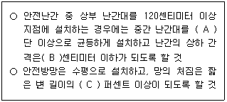
- A: 2,B: 60,C:10
- A: 2,B: 60,C:12
- A: 2,B: 75,C:10
- A: 3,B: 75,C:10
- A: 3,B: 75,C:12
(정답률: 알수없음)

2. 산업안전보건기준에 관한 규칙상 폭발ㆍ화재 및 위험물누출에 의한 위험방지에 관한 설명으로 옳은 것만을 모두 고른 것은?
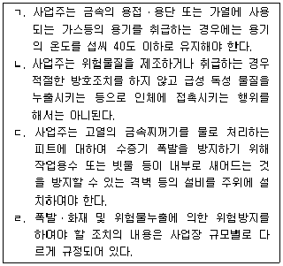
- ㄱ, ㄴ
- ㄱ, ㄷ
- ㄱ, ㄹ
- ㄴ, ㄷ
- ㄷ, ㄹ
(정답률: 알수없음)
3. 산업안전보건법령상 건강진단에 관한 설명으로 옳지 않은 것은?
- 사무직 종사 근로자 외의 근로자는 1년에 1회 이상 일반건강진단을 실시하여야 한다.
- 상시 사용하는 근로자 중 사무직에 종사하는 근로자란 공장 또는 공사현장과 같은 구역에서 서무ㆍ인사ㆍ경리ㆍ판매ㆍ설계 등의 사무업무에 종사하는 근로자를 말하며, 판매업무에 직접 종사하는 근로자는 제외한다.
- 학교보건법에 따른 건강검사를 받은 근로자는 산업안전보건법 시행규칙에 따른 일반건강진단을 실시한 것으로 본다.
- 사업주는 본인의 동의 없이는 개별 근로자의 건강진단 결과를 공개하여서는 아니된다.
- 사업주는 일반건강진단 또는 특수건강진단을 정기적으로 실시하도록 하되, 건강 진단의 실시시기를 안전보건관리규정 또는 취업규칙에 명기하여야 한다.
(정답률: 알수없음)
4. 산업안전보건법령상 석면에 관한 설명으로 옳지 않은 것은?
- 석면해체ㆍ제거작업의 완료 후 해당 작업장의 공기 중 석면농도는 1 세제곱센티 미터당 0.01개 이하이어야 한다.
- 석면을 사용하는 작업장소의 바닥재료는 불침투성재료를 사용하고 청소하기 쉬운 구조로 하여야 한다.
- 근로자가 석면을 뿜어서 칠하는 작업을 할 경우 사업주는 석면이 흩날리지 않도록 습기를 유지하거나 밀폐 또는 국소배기장치설치 등 필요한 대책을 강구해야 한다.
- 석면 취급작업을 마친 근로자의 오염된 작업복은 석면 전용 탈의실에서만 벗도록 하여야 한다 .
- 석면을 사용하는 장소는 다른 작업장소와 격리하여야 한다.
(정답률: 알수없음)
5. 산업안전보건기준에 관한 규칙상 소음에 의한 건강장해예방조치를 규정한 내용 으로 옳지 않은 것은?
- “소음작업”이란 1일 8시간 작업을 기준으로 85데시벨 이상의 소음이 발생하는 작업을 말한다.
- 100데시벨 이상의 소음이 1일 2시간 이상 발생하는 작업은 “강렬한 소음작업”이다.
- 소음이 1초 이상의 간격으로 발생하는 작업으로서 120데시벨을 초과하는 소음이 1일 1만회 이상 발생하는 작업은 “충격소음작업”이다.
- 사업주는 근로자가 소음작업, 강렬한 소음작업 또는 충격소음작업에 종사하는 경우 청력보호구를 지급하고 착용하도록 하여야 한다.
- 소음의 작업환경측정 결과 소음수준이 85데시벨을 초과하는 사업장의 사업주는 청력보존프로그램을 수립하여 시행하여야 한다.
(정답률: 알수없음)
6. 다음 내용 중 산업안전보건법령상 산업위생지도사가 타인의 의뢰를 받아 수행할 수 있는 직무인 것은 모두 다음 내용 중 산업안전보건법령상 산업위생지도사가 타인의 의뢰를 받아 수행할 수 있는 직무인 것은 모두 몇개인가?
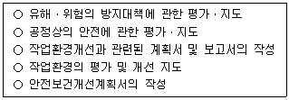
- 1개
- 2개
- 3개
- 4개
- 5개
(정답률: 알수없음)
7. 산업안전보건법령상 산업재해 발생 보고 및 기록에 관한 설명으로 옳은 것은?
- 사업주는 산업재해로 3일 이상의 요양이 필요한 부상을 입은 사람이 발생한 경우에는 해당 산업재해가 발생한 날부터 15일 이내에 산업재해조사표를 작성하여 제 출하여야 한다.
- 사업주는 산업재해가 발생한 때에는 근로자의 인적사항, 재해 발생의 원인및 과정 등을 기록ㆍ보존하여야 하는데, 재발방지계획은 거기에 포함되지 않는다.
- 근로자가 산업재해보상보험법에 따른 요양급여를 신청한 경우라도 사업주는 관할 지방고용노동관서의 장에게 산업재해조사표를 제출하여야 한다.
- 건설업을 영위하는 사업주는 산업재해조사표에 근로자 대표의 확인을 받아야 하며, 그 기재 내용에 대하여 근로자 대표의 이견이 있는 경우에는 그 내용을 첨부 하여야 한다.
- 사망자 1명과 직업성질병자가 동시에 5명 발생한 산업재해의 경우 사업주는 재해 발생의 개요 및 피해 상황 등을 지체 없이 관할 지방고용노동관서의 장에게 보고하여야 한다.
(정답률: 알수없음)
8. 산업안전보건법령상 안전보건관리책임자가 총괄ㆍ관리해야 할 업무에 해당하는것만을 모두 고른 것은?
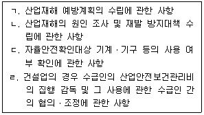
- ㄱ, ㄴ
- ㄱ, ㄷ
- ㄱ, ㄹ
- ㄴ, ㄷ
- ㄷ, ㄹ
(정답률: 알수없음)
9. 산업안전보건법령상 물질안전보건자료 및 경고표시에 관한 설명으로 옳은 것은?
- 대상화학물질을 양도하거나 제공하는 자는 물질안전보건자료 제공의무가 없다.
- 약사법에 따른 의약품은 물질안전보건자료의 작성 대상이다.
- 탱크로리, 파이프라인에 의하여 대상화학물질을 양도하거나 제공하는 경우에는 경고표시 기재 항목을 적은 자료를 제공할 필요가 없다.
- 사업주는 새로운 대상화학물질이 도입된 경우 근로자에게 물질안전보건자료에 관한 교육을 매번 실시할 필요가 없다.
- 사업주는 물질안전보건자료에 관한 교육을 할 때 유해성ㆍ위험성이 유사한 대상 화학물질을 그룹별로 분류하여 교육할 수 있다.
(정답률: 알수없음)
10. 산업안전보건법령상 유해ㆍ위험방지계획서 또는 공정안전보고서에 관한 설명으로 옳은 것은?
- 전기장비 제조업으로서 전기 계약 용량이 200 킬로와트 이상인 사업은 유해ㆍ위험 방지계획서 제출 대상 업종에 포함되어 있다.
- 깊이 5미터 이상의 굴 공사를 하는 경우 사업주는 건설안전 분야 산업안전지도사의 의견을 들은 후 유해ㆍ위험방지계획서를 제출하여야 한다.
- 유해ㆍ위험방지계획서에 대한 심사결과 사업주는 지방고용노동관서의 장으로부터 공사 공중지명령 또는 계획변경명령을 받은 경우에는 계획서를 보완하거나 변경하여 한국산업안전보건공단에 제출하여야 한다.
- 사업주는 공정안전보고서 심사결과를 근로자에게 알려주어야 한다.
- 사업주는 유해ㆍ위험설비의 설치ㆍ이전 또는 주요 구조부분의 변경공사의 착공일 전까지 공정안전보고서를 2부 작성하여 한국산업안전보건공단에 제출하여야 한다.
(정답률: 알수없음)
11. 산업안전보건법령상 안전ㆍ보건교육에 관한 설명으로 옳은 것은?
- 사무직 종사 근로자는 정기교육 대상이 아니다.
- 관리감독자의 지위에 있는 사람은 연간 8시간 이상의 교육을 받아야 한다.
- 작업내용 변경시 일용근로자를 제외한 근로자의 안전ㆍ보건교육은 1시간 이상 실시하여야 한다.
- 채용 시의 근로자에 대한 안전ㆍ보건교육은 고용형태에 관계없이 교육시간이 동일하다.
- 안전보건관리책임자도 고용노동부장관이 실시하는 안전ㆍ보건에 관한 직무교육 으로서 신규교육과 보수교육을 받아야 한다.
(정답률: 알수없음)
12. 산업안전보건기준에 관한 규칙상 근골격계부담작업으로 인한 건강장해 예방에 관한 설명으로 옳지 않은 것은?
- 사업주는 유해요인 조사를 하는 경우에 근로자와의 면담,증상 설문조사, 인간공 학적 측면을 고려한 조사 등 적절한 방법으로 하여야 한다.
- 사업주는 근골격계부담작업을 하는 경우에 근골격계질환 발생 시의 대처요령에 대해 근로자에게 알려야 한다.
- 사업주는 근골격계질환 예방관리 프로그램을 작성ㆍ시행할 경우에 근로자대표의 동의를 받아야 한다.
- 사업주는 유해요인 조사에 근로자대표 또는 해당 작업 근로자를 참여시켜야 한다.
- 사업주는 근로자가 5킬로그램 이상의 중량물을 들어올리는 작업을 하는 경우에 주로 취급하는 물품에 대하여 근로자가 쉽게 알 수 있도록 물품의 중량과 무게 중심에 대하여 작업장 주변에 안내표시를 하여야 한다.
(정답률: 알수없음)
13. 산업안전보건기준에 관한 규칙상 밀폐공간 내 작업에 관한 설명으로 옳은 것은?
- “산소결핍”이란 공기 중의 산소농도가 18퍼센트 미만인 상태를 말한다.
- 밀폐공간 보건작업 프로그램에는 작업시작 전ㆍ후 공기상태가 적정한지를 확인 하기 위한 측정ㆍ평가, 방독마스크의 착용과 관리에 대한 내용이 포함되어야 한다.
- 근로자가 밀폐공간에서 작업을 하는 경우 밀폐공간 보건작업 프로그램을수립하여 시행하여야 하는 주체는 보건관리자 선임의무가 있는 사업주에 한한다.
- 사업주는 근로자가 밀폐공간에서 작업을 하는 경우 상시 작업상황을 감시할 수 있는 감시인을 지정하여 밀폐공간 내부에 배치하여야 한다.
- 사업주는 밀폐공간에 종사하는 근로자에 대하여 응급처치 등 긴급 구조훈련을 1년에 1회 이상 주기적으로 실시하여야 한다.
(정답률: 알수없음)
14. 산업안전보건법령상 제조ㆍ수입ㆍ양도ㆍ제공 또는 사용이 금지되는 유해물질이 아닌 것은?
- 염화비닐
- 청석면 및 갈석면
- 베타-나프틸아민과 그 염
- 폴리클로리네이티드터 페닐(PCT)
- 악티노라이트석면, 안소필라이트석면 및 트레모라이트석면
(정답률: 알수없음)
15. 산업안전보건법령에 규정된 용어에 관한 설명으로 옳은 것은?
- “근로자”란 직업의 종류를 불문하고 임금ㆍ급료 기타 이에 준하는 수입에 의하여 생활하는 자를 말한다.
- “작업환경측정”이란 작업환경 실태를 파악하기 위하여 해당 근로자 또는 작업장에 대하여 고용노동부장관이 지정하는 자가 측정계획을 수립하여 시료를 채취하고 분석ㆍ평가하는 것을 말한다.
- 2개월 이상의 요양이 필요한 부상자가 동시에 3명이상 발생한 재해는 “중대재해”에 포함된다.
- “안전ㆍ보건진단”이란 산업재해를 예방하기 위하여 잠재적 위험성을 발견하고 그 개선대책을 수립할 목적으로 고용노동부장관이 지정하는 자가 하는 조사ㆍ평가를말한다.
- “사업주”란 근로기준법상의 사용자를 말한다.
(정답률: 알수없음)
16. 다음의 경우 산업안전보건법령상 사업장에 선임하여야 할 안전ㆍ보건관리자에 관한 설명으로 옳지 않은 것은?
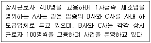
- 도급인 A와 수급인 B, 수급인 C는 각각 안전관리자 1명씩 총 3명의 안전관리자를 선임하는 것이 원칙이다.
- 도급인A가 자신의 근로자수 400명에 대한 안전관리자 1명과 수급인 BㆍC의 근로 자수 200명에 대한 안전관리자 1명을 추가로 선임하였다면 수급인 BㆍC는 별도의 안전관리자를 선임하지 않아도 된다.
- 도급인 A와 수급인 B, 수급인 C는 각각 보건관리자 1명씩 총 3명의 보건관리자를 선임하는 것이 원칙이다.
- 도급인A가 자신의 근로자수 400명에 대한 보건관리자 1명과 수급인 BㆍC의 근 로자수 200명에 대한 보건관리자 1명을 추가로 선임하였다면 수급인 BㆍC는 별 도의 보건관리자를 선임하지 않아도 된다.
- 위 ① 항의 경우 도급인 A와 수급인 BㆍC가 안전관리자를 선임할 때 건설안전기사 자격을 가진 사람을 안전관리자로 선임하여서는 아니된다.
(정답률: 알수없음)
17. 산업안전보건법령상 안전보건관리규정에 대한 설명으로 옳은 것은?
- 안전보건관리규정 중 당해 사업장에 적용되는 단체협약 및 취업규칙에 반하는 부분에 관하여는 안전보건관리규정을 우선 적용한다.
- 안전보건관리규정에는 하도급 사업장에 대한 안전ㆍ보건관리에 관한 사항이 포함되어야 한다.
- 사업주는 안전보건관리규정을 작성하여야 할 사유가 발생한 날부터 60일 이내에 안전보건관리규정을 작성하여야 한다.
- 사업주는 안전보건관리규정을 변경하여야 할 사유가 발생한 경우 해당 사유가 발생한 날부터 60일 이내에 안전보건관리규정을 변경하여야 한다.
- 사업주가 안전보건관리규정을 작성하거나 변경할 때에 산업안전보건위원회가 설치 되어 있지 아니한 사업장의 경우에는 근로자대표에게 통보만 하면 된다.
(정답률: 알수없음)
18. 산업안전보건법령상 안전검사에 관한 설명으로 옳지 않은 것은?
- 프레스, 전단기 등 유해ㆍ위험기계등을 사용하는 사업주는 유해ㆍ위험기계등의 안전에 관한 성능이 검사기준에 맞는지에 대하여 안전검사를 받아야 한다.
- 위 ① 항의 경우 유해ㆍ위험기계 등을 사용하는 사업주와 소유자가 다른 경우에는 해당 유해ㆍ위험기계 등을 사용하는 사업주가 안전검사를 받아야 한다.
- 안전검사 대상인 크레인, 리프트및 곤돌라의 검사주기는 사업장에 설치가 끝난 날부터 3년 이내에 최초 안전검사를 실시하되, 그 이후부터 2년마다 실시하여야 한다.
- 위 ③ 항의 안전검사 대상 기계ㆍ기구를 건설현장에서 사용하는 경우에는 최초로 설치한 날부터 6개월마다 안전검사를 실시하여야 한다.
- 안전검사 대상인 프레스, 전단기의 검사주기는 사업장에 설치가 끝난 날부터 3년 이내에 최초 안전검사를 실시하되, 그 이후부터 2년마다 실시하여야 한다.
(정답률: 알수없음)
19. 산업안전보건기준에 관한 규칙상 근로자의 추락위험 예방에 관한 설명으로 옳지않은 것은?
- 안전방망의 설치위치는 가능하면 작업면으로부터 가까운 지점에 설치하여야 하며, 작업면으로부터 망의 설치지점까지의 수직거리는 10미터를 초과하지 아니하여야 한다.
- 안전난간은 상부 난간대, 중간 난간대, 발끝막이판 및 난간기둥으로 구성하여야 한다.
- 안전난간은 구조적으로 가장 취약한 지점에서 가장 취약한방향으로 작용하는 50킬로그램 이상의 하중에 견딜 수 있는 구조이어야 한다.
- 사업주는 높이 1미터 이상인 계단의 개방된 측면에 안전난간을 설치하여야 한다.
- 사업주는 높이 또는 깊이 2미터 이상의 추락할 위험이 있는 장소에서 작업하는 근로자에게 안전대를 지급하고 착용하도록 하여야 한다.
(정답률: 알수없음)
20. 산업안전보건법령상 작업환경측정에 대한 설명으로 옳은 것은?
- 작업환경측정 대상 작업장은 작업환경측정 대상 유해인자가 존재하는 작업장을 말한다.
- 작업환경측정을 할 때에는 모든 측정은 반드시 개인시료 채취방법으로 하여야 한다.
- 작업장 또는 작업공정이 신규로 가동되거나 변경되어 작업환경측정 대상 작업장이 된 경우에는 지체없이 작업환경측정을 하여야 한다.
- 발암성물질인 화학적 인자의 측정치가 노출기준을 초과하는 경우 해당 사업장 전체에 대하여 그 측정일부터 3개월에 1회 이상 작업환경측정을 하여야 한다.
- 사업주는 작업환경측정 결과 노출기준을 초과한 작업공정이 있는 경우 개선 등 적절한 조치를 하고 시료채취를 마친 날부터 60일 이내에 해당 작업공정의 개선을 증명할 수 있는 서류 또는 개선계획을 관할 지방고용노동관서의 장에게 제출 하여야 한다.
(정답률: 알수없음)
21. 산업안전보건법령상 명예산업안전감독관에 대한 설명으로 옳지 않은 것은?
- 고용노동부장관은 산업안전보건위원회 설치 대상 사업의 근로자 중에서 근로자 대표가 사업주의 의견을 들어 추천하는 사람을 명예산업안전감독관으로 위촉할 수 있다.
- 위 ① 항의 명예산업안전감독관은 법령 및 산업재해 예방정책의 개선을 건의할 수 있다.
- 명예산업안전감독관의 임기는 2년으로 하되, 연임할 수 있다.
- 고용노동부장관은 명예산업안전감독관의 활동을 지원하기 위하여 수당 등을 지급 할 수 있다.
- 고용노동부장관은 근로자대표가 사업주의 의견을 들어 위촉된 명예산업안전감독관의 해촉을 요청한 경우 그를 해촉할 수 있다.
(정답률: 알수없음)
22. 산업안전보건법령상 산업안전보건위원회에 대한 설명으로 옳지 않은 것은?
- 산업안전보건위원회의 위원장은 위원 중에서 호선(互選)하며, 이 경우 근로자위원과 사용자위원 중 각 1명을 공동위원장으로 선출할 수 있다.
- 근로자위원 중 근로자대표는 근로자의 과반수로 조직된 노동조합이 있는 경우에는 그 노동조합의 대표자를 말한다.
- 위 ② 항의 경우 근로자의 과반수로 조직된 노동조합이 없는 경우에는 근로자의 과반수를 대표하는 사람을 말한다.
- 유해ㆍ위험사업의 대표자가 사용자위원을 지명하는 경우에는 해당 사업장의 해당 부서의 장을 반드시 사용자위원으로 지명하여야 한다.
- 산업안전보건위원회의 회의는 근로자위원 및 사용자위원 각 과반수의 출석으로 시작하고 출석위원 과반수의 찬성으로 의결한다.
(정답률: 알수없음)
23. 산업안전보건법령상 근로자의 보건관리에 관한 설명으로 옳지 않은 것은?
- 사업주는 감염병,정신병 또는 근로로 인하여 병세가 크게 악화될 우려가 있는 질병으로서 고용노동부령으로 정하는 질병에 걸린 자에게는 의사의 진단에 따라 근로를 금지하거나 제한하여야 한다.
- 사업주는 근로가 금지되거나 제한된 근로자가 건강을 회복하였을 때에는 지체 없이 취업하게 하여야 한다.
- 사업주는 정신신경증, 알코올중독, 신경통, 그밖의 정신신경계의 질병이 있는 사람은 근로를 금지시켜야 한다.
- 사업주는 근로를 금지하거나 근로를 다시 시작하도록 하는 경우에는 미리 의사인 보건관리자, 산업보건의 또는 건강진단을 실시한 의사의 의견을 들어야 한다.
- 관할 지방고용노동관서의 장이 역학조사의 필요성을 인정하는 경우에는 산업안전 보건위원회의 의결이나 상대방의 동의 없이 역학조사를 할 수 있다.
(정답률: 알수없음)
24. 산업안전보건법령상 근로자대표의 자료요청에 대하여 사업주가 응하지 않아 되는 것만을 모두 고른 것은?
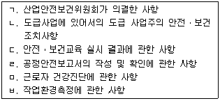
- ㄱ , ㄴ , ㄷ
- ㄱ , ㅁ, ㅂ
- ㄴ , ㄷ , ㄹ
- ㄷ , ㄹ , ㅁ
- ㄹ , ㅁ, ㅂ
(정답률: 알수없음)
25. 산업안전보건기준에 관한 규칙상 근로자의 위험을 예방하기 위하여 규정된 내용 으로 옳은 것은?
- 거푸집 동바리로 사용하는 파이프 서포트를 2개 이상 이어서 사용하지 않도록 하여야 한다.
- 콘크리트를 타설하는 경우에는 지지강도가 높게 나오게 중앙부위에 집중적으로 타설하여야 한다.
- 흙막이등울기면의 붕괴방지 조치를 하지 않고 풍화암으로 이루어진 지반을 굴착하는 경우 굴착면의 기울기는 1:0.5에 맞도록 하여야 한다.
- 위 ③ 항의 경우 습지인 보통흙으로 이루어진 지반을 굴착하는 경우에는 굴착면의 기울기는 1:0.5∼1 : 1에 맞도록 하여야 한다.
- 흙막이등기울기면의 붕괴방지 조치를 하지 않은 상태에서 굴착면의 경사가 달라서 기울기를 계산하기 곤란한 경우 해당 굴착면에 대하여 굴착면의 기울기 기준에 따라 붕괴의 위험이 증가하지 않도록 해당 각 부분의 경사를 유지하여야 한다.
(정답률: 알수없음)
2과목: 산업보건일반
26. 검사결과값이 높을수록 뇌심혈관계 질환에 예방적 효과를 나타내는 것은?
- 혈당
- 중성지방
- 총콜레스테롤
- HDL-콜레스테롤
- LDL-콜레스테롤
(정답률: 알수없음)
27. 산업안전보건법령상 대상 유해인자와 배치 후 첫 번째 특수건강진단의 시기가 옳게 짝지어진 것은?
- N,N-디메틸아세트아미드 -1개월 이내
- N,N-디메틸포름아미드 -3개월 이내
- 벤젠 -3개월 이내
- 염화비닐 -6개월 이내
- 사염화탄소 -6개월 이내
(정답률: 알수없음)
28. 산업안전보건법령상 진단결과에 따산업안전보건법령상 진단결과에 따라 사업주가 근로를 금지하거나 취업을 제한하여야 하는 대상이 아닌 질병자는?
- 정신분열증에 걸린 사람
- 마비성 치매에 걸린 사람
- 폐결핵으로 진단받고 1개월째 약물치료를 받고 있는 사람
- 규폐증으로 진단받고 모래를 이용한 주형작업에 근무하려는 사람
- 만성신장질환으로 치료중이나 카드뮴노출 작업장에 근무하려는 사람
(정답률: 알수없음)
29. 다음질환의 유해인자에 대한 노출이 중단되면 방사선학적 소견상 자연적 완화를 기대할 수 있는 진폐증은 ?
- 면폐증
- 규폐증
- 베릴륨폐증
- 탄광부진폐증
- 용접공폐증
(정답률: 알수없음)
30. 유기용제와 독성영향이 잘못 짝지어진 것은?
- 톨루엔 -조혈장애
- 벤젠 -재생불량성 빈혈
- 이황화탄소 -말초신경장애
- 메틸알콜 -위축성시신경염
- 2-브로모프로판 -생식독성
(정답률: 알수없음)
31. 남성 근로자 우측귀의 청력검사결과와 연령보정값은 아래표와 같다. 이 근로자의 표준역치변동값과 청력평가로 옳은 것은?
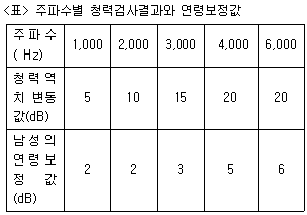
- 표준역치변동값 : 8.7 dB, 청력평가 : 유의하지 않은 표준역치변동
- 표준역치변동값: 9.5 dB, 청력평가 : 유의한 표준역치변동
- 표준역치변동값 : 10.4 dB, 청력평가 : 유의하지 않은 표준역치변동
- 표준역치변동값 : 11.7 dB, 청력평가 : 유의한 표준역치변동
- 표준역치변동값 : 12.3 dB, 청력평가 : 유의하지 않은 표준역치변동
(정답률: 알수없음)
32. 근로자의 폐기근로자의 폐기능 검사에 관한 설명으로 옳지 않은 것은?(단, TLC: 총폐활량, FVC: 노력성 폐활량, FEV1 : 일초율)
- 기관지 천식과 같은 폐쇄성질환에서는 FEV1이 FVC 보다 더 많이 감소한다.
- 검사결과는 같은 성, 연령, 신장, 인종 등의 참고값과 비교하여 해석하여야 한다.
- FVC는 최대로 흡입한후 최대한 내쉰 총 공기량이며, FEV1은 검사하는 동안 처음 1초간 내쉰 공기량이다.
- 신뢰할 만한 검사가 되기 위해서 최대한으로 숨을 들이마시어 TLC에 도달한 다음 검사를 시작해야 한다.
- 폐섬유화와 같은 제한성 질환에서는 FEV1과 FVC 모두 감소하여 특징적으로 FEV1 / FVC비가 정상이거나 작아진다.
(정답률: 알수없음)
33. 손목을 이용하여 드라이버로 주로 작업하는 근로자가 엄지와 2,3수지 부위가 저리다고 할 때, 적절한 진단결과는?
- 경추염좌
- 방아쇠 수지
- 유착성 견관절염
- 수근관증후군
- 테니스 엘보우(외상과염)
(정답률: 알수없음)
34. 유해인자의 피부흡수에 관한 설명으로 옳지 않은 것은?
- 지용성이 높은 물질은 피부흡수가 더 잘된다.
- 물질의 pH 가 피부흡수에 가장 중요한 역할을 한다.
- 피부흡수가 가능한 물질은 노출기준에?Skin?으로 표시한다.
- 극성 유해물질의 피부흡수는 피부의 수분함량에 영향을 많이 받는다.
- 피부의 각질층은 유해인자의 흡수에 관한 장벽으로 가장 중요한 역할을 한다.
(정답률: 알수없음)
35. 직무스트레스를 해결하기 위한 조직적 접근에 관한 내용으로 옳지 않은 것은?
- 근로자를 참여시킨다.
- 단계적으로 문제에 접근한다.
- 조직 문화의 변화를 포함한다.
- 사업주는 프로그램에 관심을 가져야 하며 책임을 져야 한다.
- 사업장에서 스트레스 관리 목적은 스트레스를 완전히 없애는 것이다.
(정답률: 알수없음)
36. 고용노동부 고시「근골격계 부담작업의 범위」에 포함되지 않는 것은? 고용노동부 고시「근골격계 부담작업의 범위」에 포함되지 않는 것은?
- 하루에 총 2시간 이상 쪼그리고 앉거나 무릎을 굽힌 상태에서 이루어지는 작업
- 하루에 2시간 이상 집중적으로 자료입력 등을 위해 키보드 또는 마우스를 조작하는 작업
- 하루에 총 2시간 이상 목,어깨, 팔꿈치, 손목 또는 손을 사용하여 같은 동작을 반복하는 작업
- 하루에 총 2시간 이상 머리 위에 손이 있거나, 팔꿈치가 어깨위에 있거나, 팔꿈치를 몸통으로부터 들거나, 팔꿈치를 몸통뒤쪽에 위치하도록 하는 상태에서 이루어지는 작업
- 하루에 총 2시간 이상 지지되지 않은 상태에서 1 kg 이상의 물건을 한 손의 손가락으로 집어 옮기거나, 2 kg 이상에 상응하는 힘을 가하여 한 손의 손가락으로 물건을 쥐는 작업
(정답률: 알수없음)
37. 산업위생 발전에 기여한 인물과 업적이 잘못 짝지어진 것은?
- 렌(Rehn)-Anilin 염료로 인한 직업성 방광암 발견
- 아그리콜라(Agricola)-<광물에 대하여>를 저술
- 해밀턴(Hamilton) -사이다공장에서 납에 의한 복통 보고 -영국의 조지 베이커
- 로리가( Loriga) -진동공구에 의한 수지의 Raynaud 증상 보고
- 갈레노스( Galenos) -구리광산에서의 산 증기의 위험성 보고
(정답률: 알수없음)
38. 노출평가는 유해인자에 대한 작업자의 노출 타당성을 파악하기 위해 통계적 방법에 근거해야 한다. 다음에 제시한 노출평가 과정 중 옳지 않은 것은?
- 노출에 대한 신뢰구간 계산
- 신뢰구간과 노출기준과의 비교
- 분포에 따른 대표치와 변이 산출
- 자료의 분포검정과 이상값 존재유무 확인
- 자료가 기하정규분포할 경우의 변이는 기하평균으로 산출
(정답률: 알수없음)
39. 공기 중 유해인자에 대해 고체공기 중 유해인자에 대해 고체흡착제를 이용하여 시료를 포집할 때, 호흡에 영향을 주는 인자에 관한 설명으로 옳은 것은?
- 습도:비극성 흡착제를 사용할 때 수증기가 흡착되기 때문에 파과가 일어난다.
- 흡착제의 크기: 입자의 크기가 클수록 표면적이 증가하므로 채취효율이 증가한다.
- 온도: 흡착은 열역학적으로 발열반응이므로 온도가 높을수록 호흡에 좋은 조건이 된다.
- 유해물질의 농도 : 공기중 유해물질의 농도가 낮을수록 흡량이 많고 파과가 일어나기 쉽다.
- 시료채취속도 : 시료채취 속도가 높으면 파과가 일어나기 쉬우며 코팅된 흡착제 일수록 그 경향이 강하다.
(정답률: 알수없음)
40. DNPH(2,4-Dinitrophenyhydrazine) 카트리지를 이용하여 작업장에서 포름알데히드(HCHO )를 포집한 후 아세토니트릴(ACN)을 이용하여 추출하였다. 고성능액체크로마토그래피( HPLC)를 이용하여 추출액을 분석하여 아래와 같은 결과를 얻었다. 포름알데히드의 농도( μg/m3)는?
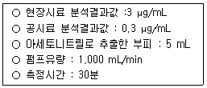
- 250
- 350
- 450
- 550
- 650
(정답률: 알수없음)
41. 작업장에서 사용하는 압축기( compressor)로부터 50 m떨어진 거리에서 측정한 음압수준( sound pressure level)이 130 dB였다면, 압축기로부터 25 m와 100 m 떨어진 거리에서 측정한 음압수준( dB)은 각각 얼마인가?(단, 작업장은 경계가 없어서 음의 전파에 방해를 받지 않은 영역이다.)
- 132, 128
- 134, 126
- 136, 124
- 140, 120
- 150, 120
(정답률: 알수없음)
42. 크실렌의 주요한 생물학적 노출지수로서 소변중에서 측정하는 물질은?
- 페놀
- 뮤콘산
- 만델산
- 메틸마뇨산
- 카르복시헤모글로빈
(정답률: 알수없음)
43. 폐포에 침착된 먼지에 관한 설명으로 옳지 않은 것은?
- 서서히 용해된다.
- 점액-섬모운동에 의해 밖으로 배출된다.
- 유리규산이 포함된 먼지는 식세포를 사멸시킨다.
- 폐포벽을 뚫고 림프계나 다른 조직으로 이동한다.
- 제거되지 않은 먼지는 폐에 남아 진폐증을 일으킨다.
(정답률: 알수없음)
44. 유해인자의 정화 및 여과에 사용하는 호흡용보호구에 관한 설명으로 옳지 않은 것은?
- 공기공급식 호흡용보호구인 송기식마스크 전면형의 양압보호계수는 1,500이다.
- 산소결핍상태에서 사용하는 호흡용보호구에는 자급식(SCBA)마스크가 포함된다.
- 호흡용보호구의 선택에 있어서 근로자가 불쾌감,호흡저항 ,중량, 시야 또는 작업방해 등을 고려하여 선정한다.
- 보호계수는 호흡용보호구 바깥쪽 오염물질 농도와 안쪽 오염물질 농도비로 착용자보호의 정도를 나타내는 척도이다.
- 선택한 호흡용 보호구 중 두 종류 이상이 밀착 계수가 양호하다는 것이 확인된 경우에 사업주는 착용근로자가 선호하는 호흡용보호구를 지급한다.
(정답률: 알수없음)
45. 근로자가 산업재해로 인하여 우리나라신체장애등급 제10등급 판정을 받았다면, 국제노동기구( ILO )의 기준으로 어느 정도의 부상을 의미하는가?
- 영구전노동불능
- 영구 일부노동불능
- 일시전노동불능
- 일시 일부노동불능
- 구급(응급)처치
(정답률: 알수없음)
46. 고용노동부의 「보호구 의무안전인증 고시 」에서 규정하는 안전인증 방독마스크에 장착하는 정화통의종류와 외부 측면의 표시 색이 옳게 짝지어진 것은?
- 유기화합물 정화통 -녹색
- 할로겐용 정화통 -회색
- 시안화수소용 정화통 -갈색
- 아황산용 정화통 -백색
- 암모니아 정화통 -노란색
(정답률: 알수없음)
47. 역학의 평가방법에 관한 설명으로 옳지 않은 것은?
- 코호트 연구에서 검정력은 비노출군에서의 질병발생률과 직접적인 관련이 있다.
- 통계학적 연관성이 입증되었다 하여도 반드시 원인적 연관성이라고 말할 수 없다.
- 제1종 오류(type I error )는 귀무가설이 실제로 사실이 아닐 때 이를 기각하지 못할 확률을 말한다.
- 메타분석이란 개별 연구로부터 모은 많은 연구결과를 통합할 목적으로 통계적 분석을 하는 계량적 방법이다.
- 어떤 요인과 질병발생 간의 연관성을 추론하고자 할 때, 연구계획및 분석방법상의 오류로 인하여 참값과 차이가 나는 결과나 추론을 생성하게 되는데 이를 바이어스 (bias)라 한다.
(정답률: 알수없음)
48. 1941년부터 1980년 사이 취업한 대규모 화학공장 근로자 800명의 사망진단서를 확보하였다. 이 중에서 암으로 사망한 사람은 160명이었으며, 동일기간 지역사회의 전체 사망자 중에서 암으로 인한 사망자는 15 %였다면 비례사망비( PMR)는?
- 75 %
- 120 %
- 133 %
- 150 %
- 200 %
(정답률: 알수없음)
49. ACGIH의 TLV 에서?skin?표시대상 물질이 아닌 것은?
- 옥탄올-물 분배계수가 낮은 물질
- 반복하여 피부에 도포했을 때 전신작용을 일으키는 물질
- 손이나 팔에 의한 흡수가 몸 전체 흡수에서 많은부분을 차지하는 물질
- 다른 노출경로에 비하여 피부흡수가 전신작용에 중요한 역할을 하는 물질
- 동물을 이용한 급성중독 시험결과, 피부흡수에 의한 LD50이 비교적 낮은 물질
(정답률: 알수없음)
50. 도금조에서 사용되는 푸시-풀(push-pull) 배기장치의 설계에 있어서 ACGIH에서 권장하는 사항이 아닌 것은?
- 푸시노즐의 각도는 하방으로 0 °∼ 20 ° 이내이어야 한다.
- 도금조의 액체표면은 배기후드 밑에서부터 30 cm 를 벗어나지 않게 한다.
- 풀(배출구 슬롯)쪽의 후드 개구면은 슬롯속도가 10 m/s 를 유지하도록 설계한다.
- 노즐의 형태는3∼6 mm 크기의 수평슬롯이나 4∼6 mm 구멍으로 직경의 3∼8배 간격으로 배치한 것을 사용한다.
- 푸시노즐의 단면이 원형 , 직사각형 , 정사각형 어느 것이나 무방하나 단면적은 전체노즐 단면적의 2.5배 이상의 크기이어야 한다.
(정답률: 알수없음)
3과목: 기업진단 · 지도
51. 테일러(Taylor )의 과학적 관리법( scientific management )에 관한 설명으로 옳은 것만을 모두 고른 것은?
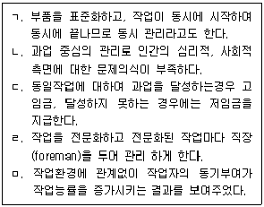
- ㄱ , ㅁ
- ㄷ , ㄹ
- ㄴ , ㄷ , ㄹ
- ㄴ , ㄹ , ㅁ
- ㄱ , ㄷ , ㄹ , ㅁ
(정답률: 알수없음)
52. 재고의 기능에 따른 분류에 관한 설명으로 옳지 않은 것은 ?
- 안전재고 : 제품 수요 , 리드타임 등의 불확실한 수요에 대비하기 위한 재고
- 분리재고 : 공정을 기준으로 공정전ㆍ후의 재고로 분리될 경우의 재고
- 파이프라인 재고 : 공장에서 물류센터 , 물류센터에서 대리점 등으로 이동 중에 있는 재고
- 투기재고 : 원자재 고갈 , 가격인상 등에 대비하여 미리 확보해두는 재고
- 완충재고 : 생산 계획에 따라 주기적인 주문으로 주문기간 동안 존재하는 재고
(정답률: 알수없음)
53. 생산 시스템에 관한 설명으로 옳지 않은 것은?
- 모듈생산시스템(MPS : modular production system )은 단납기화 요구강화와 원가 절감을 위하여 부품 또는 단위의 조합에 따라 고객의 다양한 주문에 대응하는 생산 시스템이다.
- 자재소요계획(MRP : material requirements planning )은 주일정계획(기준생산일정)을 기초로 하여 완제품 생산에 필요한 자재 및 구성부품의 종류,수량 시기 등을 계획하는 시스템이다.
- 적시생산시스템(JIT : just in time )은 제품생산에 요구되는 부품 등 자재를 필요한 시기에 필요한 수량만큼 적기에 생산, 조달하여 낭비요소를 근본적으로 제거 하려는 생산 시스템이다.
- 유연생산시스템(FMS : flexible manufacturing system )은 CAD, CAM 및 MRP 등의 기술을도입, 생산 설비를 빠르게 전환하여 소품종대량생산을 효율적으로 행하는 시스템이다.
- 셀생산시스템(CMS : cellular manufacturing system )은 숙련된 작업자가 컨베이어 라인이 없는 셀(cell) 내부에서 전체공정을 책임지고 완수하는 사람중심의자율 생산 시스템이다.
(정답률: 알수없음)
54. 프로젝트 관리에 활용되는 PERT(program evaluation & review technique )와 CPM(critical path method )의 설명으로 옳은 것은?
- PERT 는 개개의 활동에 대해 낙관적 시간치, 최빈 시간치, 비관적 시간치를 추정한 후 그들이 정규분포를이룬다고 가정하여 평균기대 시간치를 구한다.
- CPM은 프로젝트의 완성시간을 앞당기기 위해 최소비용법을 활용하여 주공정상에 위치하는 작업들의 비용관계를 분석하여 소요시간을 줄인다.
- 과거자료나 경험을 기초로 한 PERT 는 활동중심의 확정적 시간을 사용하고, 불확실한 작업을 기초로 한 CPM은 단계중심의 확률적 시간 추정치를 사용한다.
- PERT/CPM은 활동의 전후 관계를 명확히 하고 체계적인 일정 및 예상통제로 효율적 진도관리를 위해 간트( Gantt)차트와 같은 도식적 기법을 활용한다.
- PERT/CPM은 TQM(total quality management )과 연계되어 있어 제품 및 서비스에 대한 고객만족 프로세스를 지향하는 프로젝트 관리도구로 적합하다.
(정답률: 알수없음)
55. 직무와 관련된 설명으로 옳은 것은?
- 직무충실화는 허즈버그 (F.Herzberg )가 2요인 이론을 직무에 구체적으로 적용하기 위하여 제창한 것이다.
- 직무분석에는 서열법, 분류법, 점수법, 요소비교법 등의 방법들이 활용된다.
- 직무기술서에는 직무수행에 요구되는 기능,지식, 육체적 능력과 교육수준이 기술되어 있다.
- 직무명세서에는 직무가치와 직무확대에 대한 구체적인 지침이 제시되어 있다.
- 직무평가의 1차적 목적은 직무기술서나 직무명세서를 작성하는 것이며, 2차적으로는 조직, 인사관리를 위한 자료를 제공하는 것이다.
(정답률: 알수없음)
56. 커뮤니케이션과 의사결정에 관한 설명으로 옳은 것은?
- 암묵지를 체계적, 조직적으로 형식지화한다고 하여도 의사결정의 가치창출 수준은 높아지지 않는다.
- 커뮤니케이션 효과를 높이기 위하여 메시지 전달자는 공식 서신, 전자우편, 전화, 직접 대면 등 다양한방식 중 한 가지 방식에 집중할 필요가 있다.
- 커뮤니케이션의 문제상황이 복잡한 경우 공식적인 수치와 공식적서신이 소통방식으로 적합하다.
- 공식적인 서신과공식적인 수치는 대면적 의사소통에 비하여 의미있는 정보를 전달할 잠재력이 높다.
- 제한된 합리성이론에 따르면 '의사결정자가 현 상태에만족한다면 새로운 대안 모색에 나서지 않는다' 라고 한다.
(정답률: 알수없음)
57. 임금관리 공정성에 관한 설명으로 옳은 것은?
- 내부공정성은 노동시장에서 지불되는 임금액에 대비한 구성원의 임금에 대한 공평성 지각을 의미한다.
- 외부공정성은 단일 조직 내에서 직무 또는 스킬의 상대적 가치에 임금 수준이 비례하는 정도를 의미한다.
- 직무급에서는 직무의 중요도와 난이도 평가, 역량급에서는 직무에 필요한 역량 기준에 따른 역량 평가에 따라 임금수준이 결정된다.
- 개인공정성은 다양한 직무 간 개인의 특질, 교육정도, 동료들과의 인화력, 업무 몰입수준 등과 같은 개인적 특성이 임금에 반영되는 정도를 의미한다.
- 조직은 조직구성원에 대한 면접조사를 통하여 자사 임금수준의 내부, 외부 공정성 수준을 평가할 수 있다.
(정답률: 알수없음)
58. 막스 베버(M. Webe막스 베버(M. Weber )가 제시한 관료제의 특징은?
- 조직의 활동을 합리적으로 조정하기 위해서는 업무처리를 위한 절차가 명확하게 규정되어야 한다.
- 조직구성원 간 의사소통의 활성화를 위해 수평적 조직구조를 선호한다.
- 환경에 대한 적절한 대응을 위해 조직구성원 간의 정보공유를 중시한다.
- '기계적 관료제'라 불리며 복잡한 환경의 대규모 조직에 효과적이다.
- 하급자는 상급자의 감독과 통제 하에 놓이게 되나 성과 평가를 할 때에는 하급자도 상급자의 평가과정에 참여한다.
(정답률: 알수없음)
59. BSC(Balanced Score Card )에 관한 설명으로 옳지 않은 것은?
- 내부 프로세스 관점과 학습 및 성장 관점도 평가의 주요 관점이다.
- 재무적 관점 이외에 고객관점도 평가의 주요 관점이다.
- 로버트 카플란( R. Kaplan )과 노튼(D. Norton )이 제안한 성과 평가 방식이다.
- 균형잡힌 성과 측정을 위한 것으로 대개 재무와 비재무지표, 결과와 과정, 내부와 외부, 노와 사 간의 균형을 추구하는 도구이다.
- 전략 모니터링 또는 전략 실행을 관리하기 위한 도구로 활용하는 경우에는 성과 평가 결과를 보상에 연계시키지 않는 것이 바람직하다는 견해가 있다.
(정답률: 알수없음)
60. A과장은 근무평정을 할 때 자신의 부하직원 B가 평소 성실하다는 이유로 자신이 직접 관찰하지 않아서 잘 모르는 B의 창의성, 도덕성, 기획력 등을 모두 높게 평가하였다. 이러한 경우 A과장은 어떤 평정오류를 범하고 있는가?
- 관대화오류
- 후광오류
- 엄격화오류
- 중앙집중오류
- 대비오류
(정답률: 알수없음)
61. 직무만족의 선행변인에 관한 설명으로 옳은 것은?
- 통제소재에서 내재론자들은 외재론자들보다 자신들의 직무에 대해 더 만족한다.
- 직무특성과 직무만족간의 상관은 질문지로 측정한 연구에서는 나타나지 않았다.
- 집단주의적 아시아 문화권에서는 직무특성과 직무만족간에 상관이 높은 것으로 나타났다.
- 급여만족은 분배공정성보다 절차공정성이 더 밀접한 관련이 있다.
- 직무특성 차원과 직무만족간의 상관을 산출해 본결과 직무만족과 가장 낮은 상관을 나타내는 직무특성은 기술 다양성이었다.
(정답률: 알수없음)
62. 사회적 권력 ( social power ) 의 유형에 대한 설명으로 옳지 않은 것은 ?
- 합법권력 : 상사의 직책에 고유하게 내재하는 권력
- 강압권력 : 상사가 징계 해고 등 부하를 처벌할 수 있는 능력
- 보상권력 : 상사가 부하에게 수당 , 승진 등 보상해 줄 수 있는 능력
- 전문권력 : 상사가 보유하고 있는 지식과 전문기술 등에 근거하는 능력
- 참조권력 : 상사가 부하에게 규범과 명확한 지침을 전달하고 , 문제발생 시 도움을 줄 수 있는 능력
(정답률: 알수없음)
63. 와르 ( Warr ) 의 정신 건강 구성요소에 대한 설명으로 옳지 않은 것은 ?
- 정서적 행복감 : 쾌감과 각성이라는 두 가지 독립된 차원을 가지고 있다 .
- 결단 : 환경적 영향력에 저항하고 자신의 의견이나 행동을 결정할 수 있는 개인의 능력을 의미한다 .
- 역량 : 생활에서 당면하는 문제들을 효과적으로 다룰 수 있는 충분한 심리적 자원을 가지고 있는 정도를 의미한다 .
- 포부 : 포부수준이 높다는 것은 동기수준과 관계가 있으며 , 새로운 기회를 적극적 으로 탐색하고 , 목표 달성을 위하여 도전하는 것을 의미한다 .
- 통합된 기능 : 목표달성이 어려울때 느끼는 긴장감과 그렇지 않을 때 느끼는 이완감 사이에 조화로운 균형을 유지할 수 있는 정도를 의미한다 .
(정답률: 알수없음)
64. 직무분석에 대한 설명으로 옳지 않은 것은 ?
- 특정직무에 대한 훈련 프로그램을 개발하기 위해서는 직무의 속성과 요구하는 기술을 알아야 한다 .
- 효과적인 수행을 하기 위한 직무나 작업장을 설계하는데 도움을 준다 .
- 작업시 시간과 노력의 낭비를 제거할 수 있고 안전 저해요소나 위험요소를 발견할 수 있다 .
- 특정직무에 대한 직무분석을 하는 기법으로 면접법 , 질문지법 , 관찰법 , 행동기법 , 중대사건기법 , 투사기법 등이 있다 .
- 과업수행에 사용되는 도구 , 기구 , 수행목적 , 요구되는 교육훈련 , 임금수준 및 안전저해요소 등에 대한 정보가 포함되어 있다 .
(정답률: 알수없음)
65. 호프스테드( Hofsted )의 문화간 차이를 이해하는 4가지 차원에 속하지 않는 것은?
- 불확실성 회피
- 개인주의-집합주의
- 남성성-여성성
- 신뢰-불신
- 세력차이
(정답률: 알수없음)
66. 작업장 스트레스의 대처방안 중 조직차원의 기법에 해당하는 것만을 모두 고른 것은?
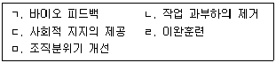
- ㄱ , ㄴ , ㄷ
- ㄱ , ㄷ , ㄹ
- ㄴ , ㄷ , ㅁ
- ㄴ , ㄹ , ㅁ
- ㄷ , ㄹ , ㅁ
(정답률: 알수없음)
67. 심리검사 결과를 분석할 때 상관계수를 이용하여 검증하는 타당도 ( validity ) 를 모두 고른 것은 ?
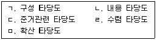
- ㄱ , ㄴ , ㄹ
- ㄱ , ㄴ , ㅁ
- ㄷ , ㄹ , ㅁ
- ㄱ , ㄴ , ㄷ , ㄹ
- ㄱ , ㄷ , ㄹ , ㅁ
(정답률: 알수없음)
68. 작업자의 수행을 평가할 때 평가자에 의한 관대화 오류가 가장 많이 발생할 수 있는 방법은?
- 종업원 순위법
- 강제배분법
- 도식적 평정법
- 정신운동능력 평정법
- 행동기준 평정법
(정답률: 알수없음)
69. 방음용 귀마개 또는 귀덮개에 관한 설명으로 옳은 것은?
- 최저음압수준이란 헤르쯔 수준을 감지할 수 있는 최저 헤르쯔 수준을 말한다.
- 백색소음이란 20∼20,000 Hz 의 가청범위 전체에 걸쳐 단속적으로 균일하게 분포된 주파수를 갖는 소음을 말한다.
- 귀마개 1종은 주로 고음을 차음하고 저음은 차음하지 않는 것이다.
- 일반적으로 귀덮개보다는 귀마개가 차음 효과가 높다.
- 귀마개 또는 귀덮개에는 안전인증의 표시 외에 일회용 또는 재사용 여부, 세척 및 소독방법 등 사용상의 주의사항을 추가로 표시해야 한다.
(정답률: 알수없음)
70. 시스템의 신뢰성 설계에 관한 설명으로 옳은 것은?
- 강건설계( Robust design )는 대체성을 가진 별개의 부품을 확보하여 시스템의 신뢰도를 높일 수 있다.
- 손상허용설계는 부품에 손상이 있어도 보전작업으로 검출하여 안전성이 보존될 수 있도록 배려하는 설계이다.
- 풀푸르프(fool-proof)는 기계가 고장이 나더라도 안전장치가 작동해 항상 안전적으로 작동하는 시스템을 말하며, 예를 들어 교통신호와 같이 고장 시에는 상시 빨간 신호가 되는 것과 같은 시스템이다.
- 페일세이프(fail-safe)는 인간이 오동작을 해도 방지되는 시스템을 말하며, 예를 들어 세탁기의 탈수장치와 같이 덮개를 열면 정지되는 시스템이다.
- 인간공학적 설계라는 것은 부품의 설계방법, 작업방법, 작업환경의 설정 등을 기계의 능력이나 한계에 적합하게 설정하는 설계이다.
(정답률: 알수없음)
71. 위험성평가의 절차를 순서대로 옳게 나열한 것은?
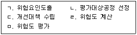
- ㄱ → ㄴ → ㄷ → ㄹ → ㅁ
- ㄴ → ㄱ → ㄷ → ㄹ → ㅁ
- ㄱ → ㄹ → ㄴ → ㅁ → ㄷ
- ㄹ → ㅁ → ㄴ → ㄱ → ㄷ
- ㄴ → ㄱ → ㄹ → ㅁ → ㄷ
(정답률: 알수없음)
72. 다음 중 안전보건경영시스템의 도입 전 고려할 사항이 아닌 것은 ?
- 전사적 측면에서는 조직의 경영에 실질적으로 도움이 되고 , 이행할 수 있는 안전 보건경영체제를 구축하는 것이 중요하다는 인식이 우선되어야 한다 .
- 안전보건방침 승인 및 계층별 , 부서별 책임과 권한을 부여하고 안전보건목표를 정하여야 한다 .
- 최고경영자는 각 부서간의 안전보건경영체제 업무를 적절히 배분하고 , 각 부서들이 솔선해서 협조할 수 있는 분위기를 만들어야 한다 .
- 조직원의 적극적인 동참을 유도할 수 있는 제도가 있어야 하며 , 적절한 포상으로 직원의 사기를 진작할 수 있어야 한다 .
- 안전보건경영에 대한 추진ㆍ이행의 핵심은 전담부서 , 전담요원의 숫자가 중요한 것이 아니라 조직 전체의 의식향상과 각 부서장의 업무수행에 대한 전문화가 필요하다 .
(정답률: 알수없음)
73. 다음 중 기계설비의 안전조건으로 옳지 않은 것은 ?
- 제작의 안전성 : 기계설비는 제작에 있어 안전성이 확보되도록 하여야 한다 .
- 외관의 안전성 : 기계설비의 외관은 기계적 재해예방을 위한 기본적인 안전조건이다
- 구조의 안전성 : 기계설비는 충분한 강도와 구조적 안전성을 유지하는 것이 기본 조건이다 .
- 작업의 안전성 : 기계설비는 작업 중 사고를 막기 위한 인간의 특성을 고려한 설계가 되어야 한다 .
- 보전의 안전성 : 기계설비의 고장ㆍ수리 등 긴급 보전작업이 안전하게 이행될 수 있도록 하여야 한다 .
(정답률: 알수없음)
74. 다음 중 지게차에 의한 운반작업에 대한 설명으로 옳지 않은 것은 ?
- 지게차를 주차장에 세워 두고 운전석을 떠날 때에는 짧은 시간이라도 제동장치를 완전하게 작동시킨 후 포크를 최하단까지 내려 원동기를 정지시킨다 .
- 지게차의 운전자가 변경되었을 때 작업계획서를 작성하여야 한다 .
- 짐을 싣고 이동하는 동안의 포크 높이는 지면으로부터 15∼20cm 의 위치가 적당하다 .
- 짐을 싣고 언덕길을 오를 때나 내려 올 때에는 속도를 줄여서 상하 방향으로 전진운전을 한다 .
- 짐을 싣고 이동할 때에는 짐이 운전자의 시야를 가리지 않도록 한다 .
(정답률: 알수없음)
75. 사고예방대책 기본원리 5단계 중에서 제2단계인 사실의 발견(현상파악)의 내용 으로 옳은 것은?
- 안전활동 방침 및 안전계획수립 및 조직을 통한 안전활동을 전개한다.
- 사고보고서 및 인적ㆍ물적 조건을 분석한다.
- 안전회의 및 토의를 실시하고 근로자의 의견을수렴한다.
- 작업공정을 분석하고, 기술적ㆍ관리적인 개선사항을 점검한다.
- 교육훈련 분석 등을 통하여 사고의 직ㆍ간접 원인을 규명한다.
(정답률: 알수없음)